Die Registerkarte Layer (Details Zeichnung)
PD-Dialog-Layers-Tab
Bedienelemente auf der Registerkarte Layer auf alle Layer auf der Grafikseite anwenden:
-
- Allgemeine Anzeige: Bedienelemente zum Aktivieren der gleichzeitigen Bearbeitung von Layer-, Zeichnungs- und Achseneigenschaften
- Zeichenreihenfolge: Zeichenverhalten für sich überschneidende Layer mit Hintergrundfarbe
- Layer nur durch Symbole aktivieren: Layer wird nur durch Klicken auf das Symbol aktiviert
- Aktivieren Sie das Diagrammfenster und klicken Sie doppelt auf einen leeren Bereich der Grafik. Klicken Sie dann auf das Symbol der Grafik (Seite) im linken Bedienfeld von Details Zeichnung; oder klicken Sie im Menü auf Format: Seite.
- Klicken Sie auf die Registerkarte Layer.
- 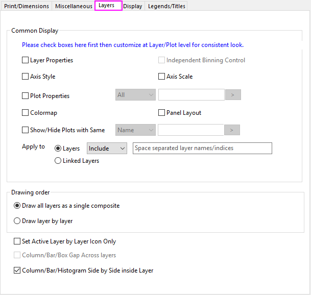
- 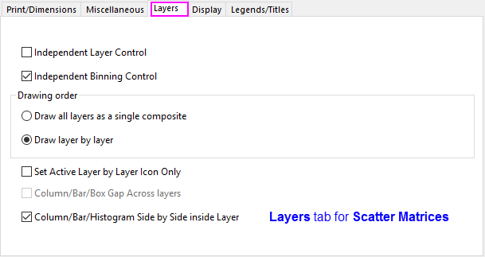
Allgemeine Anzeige
Die Bedienelemente der Allgemeinen Anzeige werden verwendet, um Anpassungen, die für einen Diagrammlayer vorgenommen wurden, auf andere Diagrammlayer auf der gleichen Diagrammseite mit mehreren Layern anzuwenden. In einem einfachen Beispiel haben Sie ein Diagramm mit mehreren Layern. Sie möchten den Zeichnungen in jedem Layer die gleiche Farbe geben. Sie könnten dies tun, indem Sie jede Zeichnung einzeln auswählen und ihnen dann mit Hilfe der Schaltflächen Füllen und Linien-/Rahmenfarbe auf der Symbolleiste Stil die gleiche Farbe zuweisen. Oder Sie könnten das Kontrollkästchen Diagrammeigenschaften auf der Registerkarte Layer aktivieren und Zeichnungen aller Layer gleichzeitig ändern.
Gruppe "Allgemeinen Anzeige" im Dialog Details Zeichnung:
-
- 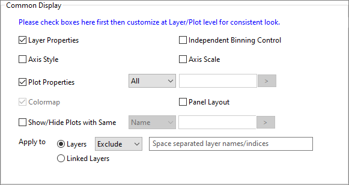
- Um die Bedienelemente der Allgemeinen Anzeige zu verwenden, aktivieren Sie die gewünschten Kontrollkästchen, bevor Sie anfangen, Anpassungen am dem Zeichnungen vorzunehmen.
- Sie können fortfahren, ausgewählte Diagrammeigenschaften benutzerdefiniert anzupassen, nachdem Details Zeichnung geschlossen wurde, indem Sie die verfügbaren Minisymbolleisten und die Schaltflächen der Symbolleisten Format und Stil verwenden.
- Beachten Sie, dass Sie über eine Minisymbolleiste des Diagamms auf Seitenebene Zugriff auf die Elemente der allgemeinen Anzeige haben. Bewegen Sie Ihre Maus oben auf der Diagrammseite (aber außerhalb des Layers) und klicken Sie, um die Symbolleiste anzuzeigen. Klicken Sie dann auf die Schaltfläche Allgemeine Anzeige. Ein Popup-Menü wird angezeigt, über das die Bearbeitung für die verschiedenen Elemente aktiviert bzw. deaktiviert werden kann.
-
- 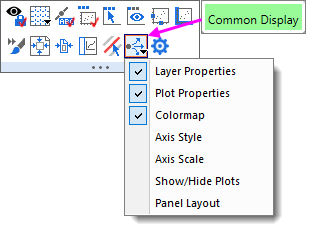
Allgemeine Anzeige, Bedienelemente
| Layereigenschaften |
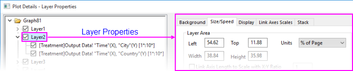
Wenden Sie alle Eigenschaften der Registerkarten auf Layerebene im Dialog Details Zeichnung auf alle Zeichnungen an, die den Bedingungen der Bedienelemente von Anwenden auf unterliegen, außer:
|
| Diagrammeigenschaften |
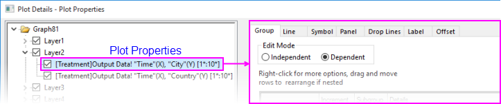
Wenden Sie die Eigenschaften auf Zeichnungsebene auf allen Registerkarten im Dialog Details Zeichnung auf Zeichnungen des gleichen Diagrammtyps an, wie in der zugehörigen Auswahlliste festgelegt (Alle, Index, Name -- siehe nächsten Absatz) und entsprechend der Bedingungen der Bedienelemente unter Anwenden auf. Beachten Sie, dass der gleiche Diagrammtyp ausschlaggebend ist (Sie haben z. B. ein Liniendiagramm mit mehreren Feldern und Sie ändern ein Diagramm in ein Säulendiagramm. Dies wird die anderen Liniendiagramme NICHT in Säulendiagramme wandeln. Beachten Sie, dass die verfügbaren Registerkarten auf Zeichnungsebene auf der rechten Seite von Details Zeichnung sich abhängig vom Diagrammtyp ändern können).
Standardmäßig werden die Bearbeitungen der Eigenschaften auf alle Zeichnungen angewendet, aber Sie können die Änderungen auf Zeichnungen des gleichen Zeichnungsindex' (Zeichnungsreihenfolge im Layer) oder auf Zeichnungen mit dem gleichen Namen beschränken. Wenn die Gruppe Diagrammeigenschaften durch den Namen definiert ist, klicken Sie auf das Ausklappmenü rechts vom Textfeld und wählen Sie die Teile der Mappe, des Blatts oder der Spaltenmetadaten, die die Gruppe definieren. Nachfolgende Änderungen an den Diagrammeigenschaften werden nur auf diese Gruppe angewendet. Informationen zur Metadatensyntax finden Sie unter Liste der @Optionen.
- 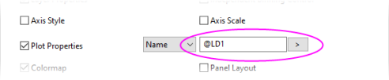
Wenn die Auswahlliste Diagrammeigenschaften auf Name festgelegt ist, ist der Bearbeitungsmodus auf der Registerkarte Gruppe im Dialog Details Zeichnung auf Unabhängig gesetzt.
|
| Farbabbildung |
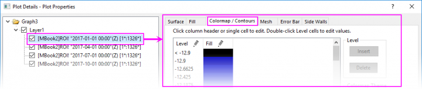
Wenden Sie die Einstellungen der Farbabbildung an (Ebene und Füllung) auf der Registerkarte Farbpalette/Kontur im Dialog Details Zeichnung, die den Bedingunge der Bedienelemente von Anwenden auf unterliegen:
|
| Achsenstil |
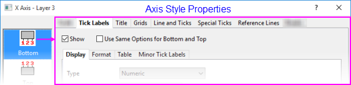
Wenden Sie alle Eigenschaften auf alle Registerkarten im Dialog Achsen an, außer diejenigen auf den Registerkarten Skalierung und Unterbrechungen für die gleiche Achse (Unten/Oben/Links/Rechts), die den Bedingungen der Bedienelemente Anwenden aufunterliegen.
|
| Achsenskalierung |
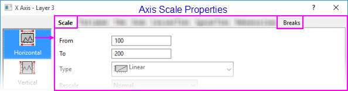
Wenden Sie alle Eigenschaften im Dialog Achsen auf den Registerkarten Skalierung und Unterbrechungen für die gleiche Dimension (Horizontal/Vertikal) an, die den Bedingungen der Bedienelemente von Anwenden auf unterliegen.
|
| Zeichnungen mit Gleichem zeigen/verbergen |
Verwenden Sie das Kontrollkästchen in Verbindung mit der Auswahlliste, um die Bedingungen zum Zeigen oder Verbergen von Zeichnungen des gleichen Namens oder Index festzulegen, die den Bedingungen der Bedienelemente von Anwenden auf unterliegen.
Wenn Sie - seit Origin 2020b - die Option Name für dieses mittlere Auswahlfeld auswählen, dürfen Sie das Muster des Namens, mit dem übereingestimmt werden soll, in das nachfolgende Kombinationsfeld eingeben; klicken Sie auf die Schaltfläche mit dem Pfeil nach rechts _Layers_Tab/Button_Arrow_in_Legend_Tab.png) neben dem Kombinationsfeld, um ein Ausklappmenü mit mehreren häufig verwendeten Musternotationen zu erweitern (@Options) und den passenden Namen festzulegen. In der Tabelle der Textbeschriftungsoptionen finden Sie unterstützte Notationen. (Bitte beachten Sie, wenn mehrere Mustern gleichzeitig eingegeben werden sollten alle Muster übereinstimmen.) Wenn kein Muster eingegeben wurde, werden nur die vorhandenen Legendeneinträge der Zeichnung verwendet, um die Zeichnungen aufeinander abzustimmen. neben dem Kombinationsfeld, um ein Ausklappmenü mit mehreren häufig verwendeten Musternotationen zu erweitern (@Options) und den passenden Namen festzulegen. In der Tabelle der Textbeschriftungsoptionen finden Sie unterstützte Notationen. (Bitte beachten Sie, wenn mehrere Mustern gleichzeitig eingegeben werden sollten alle Muster übereinstimmen.) Wenn kein Muster eingegeben wurde, werden nur die vorhandenen Legendeneinträge der Zeichnung verwendet, um die Zeichnungen aufeinander abzustimmen.
Beachten Sie, dass einfaches Aktivieren des Kontrollkästchens nichts zeigt oder verbirgt. Wenn Sie die Bedingungen festgelegt haben, können Sie Zeichnungen auf folgende Weisen zeigen oder verbergen:
- Aktivieren oder Deaktivieren eines Kontrollkästchens neben einer Zeichnung im linken Bedienfeld von Details Zeichnung
- Aktivieren oder Deaktivieren eines Kontrollkästchens neben einer Zeichnung in der Objektverwaltung
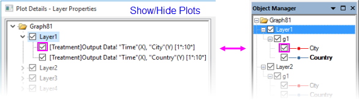
|
| Felderlayout |
Vorrangig anwendbar auf Trellis-Diagramme mit doppelter Y-Achse. Das Aktivieren dieses Kontrollkästchens bedeutet, dass die folgenden Eigenschaften von den Layern geteilt werden und zwar unter den Bedingungen, die von den Bedienelementen Anwenden auf vorgegeben werden:
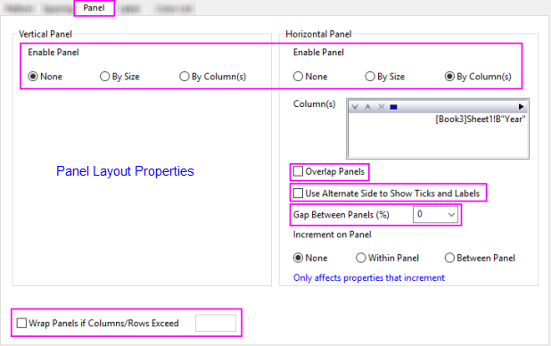
Weitere Informationen zu Trellis-Diagrammen finden Sie unter Trellis-Diagramme und der Registerkarte Feld im Dialog Details Zeichnung.
|
| Anwenden auf |
Definiert die Layer, auf die die Eigenschaften von Layer, Zeichnung, Achse, Felderlayout und Zeigen/Verbergen angewendet werden sollen, wobei der Standard alle Layer im Fenster (Seite) sind:
- Layer: Wählen Sie diese Schaltfläche, um eine durch Leerzeichen getrennte Liste der Layer (identifiziert per Layername oder -index) für die Allgemeine Anzeige einzuschließen oder auszuschließen. Der Layername wird im Dialog Details Zeichnung oder in der Objektverwaltung angezeigt. Der Layerindex wird auf dem Layersymbol in der linken oberen Ecke des Diagrammfensters gezeigt (z. B.
_Layers_Tab/PD_CD_layerIcons.png) ). ).
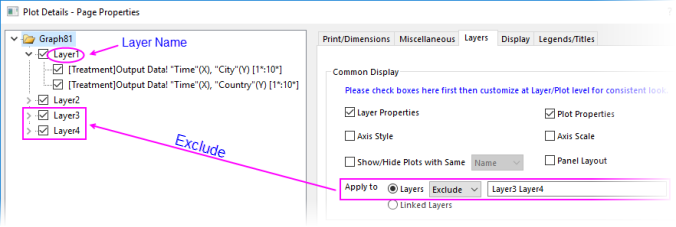
- Verknüpfte Layer: Modifikationen an einem verknüpften Layer beeinflusst nur andere verknüpfte Layer (wenn z. B. Layer2 mit Layer1 verknüpft ist und Layer4 mit Layer3 verknüpft ist, werden jegliche Änderungen an Layer1 Layer2 beeinflussen, aber nicht Layer3 und Layer4. Dementsprechend beeinflussen Änderungen an Layer2 Layer1, aber nicht Layer3 und Layer4.
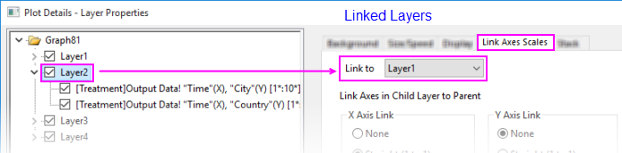
|
Unabhängige Steuerung von Layern/Einteilungen
Aktivieren Sie für die Matrix von Streudiagrammen das Kontrollkästchen Unabhängige Layerkontrolle, um die Steuerung der allgemeinen Anzeige unter Layereigenschaften auf Layerebene für alle Layer freizugeben.
Aktivieren Sie für die Matrix von Streudiagrammen das Kontrollkästchen Unabhängige Klasseneinteilungskontrolle, um die Steuerung der allgemeinen Anzeige auf der Registerkarte Klasseneinteilung auf der Registerkarte Daten für alle Histogramme/Boxdiagramme in den diagonalen Layern freizugeben. Sie können Automatische Einteilung deaktivieren, um verschiedene Einteilungselemente festzulegen.
Zeichnungsreihenfolge
Mit der Option Alle Layer als ein zusammengesetztes Layer zeichnen werden die Daten in beiden Layern angezeigt, auch wenn eine oder beide Layer eine Hintergrundfarbe haben.
Layer für Layer zeichnen zeichnet Layer 2 vollständig nach Layer 1, einschließlich des Hintergrunds von Layer 1. Wenn Sie eine Hintergrundfarbe für Layer 2 festlegen, indem Sie Layer 2 in der Baumstruktur des Dialogs Details Zeichnung und eine Farbe auf der Registerkarte Hintergrund wählen, maskiert der Hintergrund im zweiten Layer die Elemente des ersten Layers. Wenn Sie für Hintergrund Kein ausgewählt haben, werden die Daten aus Layer 1 in Layer 2 sichtbar sein.
Layer nur durch Symbole aktivieren
Aktivieren Sie dieses Kontrollkästchen, um sicherzustellen, dass ein Layer nur durch Klicken auf das Layersymbol in der linken oberen Ecke des Diagrammfensters ausgewählt werden kann.
Säulen-/Balken-/Boxenabstand über Layer
Aktivieren Sie dieses Kontrollkästchen, um den Abstand und die Verschiebung zwischen den Säulen/Balken/Boxen bei derselben X-Position über die Layer zu aktivieren.
Dieses Kontrollkästchen ist verfügbar, wenn die folgenden Bedingungen erfüllt sind:
- Die Seite hat verknüpfte Layer.
- Die X-Achse hat eine Verknüpfung mit Gerade zu einem Hauptlayer (auf der Registerkarte Achsenskalierung verknüpfen des Dialogs Details Zeichnung auf Layerebene).
- Alle Dimensionen der verknüpften Layer verwenden % des verknüpften Layers und sind bei Links auf 0 und bei Breite auf 100 gesetzt (auf der Registerkarte Größe des Dialogs Details Zeichnung auf Layerebene).
Wenn dieses Kontrollkästchen aktiviert ist, können Sie den Abstand der Säulen/Balken/Boxen oder die Verschiebung über die Layer auf der Registerkarte Abstände des Dialogs Details Zeichnung der ersten im Hauptlayer verknüpften Datenzeichnung benutzerdefiniert anpassen; die entsprechenden Bedienelemente der anderen Datenzeichnungen werden abgeblendet angezeigt.
Säulen/Balken/Histogramm nebeneinander innerhalb des Layers
Wenn Sie mehrere Histogramme oder Säulen-/Balkendiagramme in einem Layer gezeichnet haben, aktivieren Sie dieses Kontrollkästchen, um die Säulen/Balken/Histogramme nebeneinander bei dem gleichen X-Wert zu positionieren. Das Deaktivieren dieses Kontrollkästchens zeichnet sie mit Überschneidung.